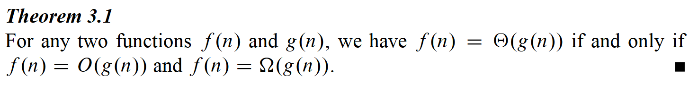

⚠ Switch to EXCALIDRAW VIEW in the MORE OPTIONS menu of this document. ⚠ You can decompress Drawing data with the command palette: ‘Decompress current Excalidraw file’. For more info check in plugin settings under ‘Saving’
RESOURCES
- Lecture Videos | Introduction to Algorithms | Electrical Engineering and Computer Science | MIT OpenCourseWare
- ⭐ Lecture Notes | Introduction to Algorithms | Electrical Engineering and Computer Science | MIT OpenCourseWare
- ⭐ Quizzes | Introduction to Algorithms | Electrical Engineering and Computer Science | MIT OpenCourseWare
- ⭐ Practice Problems | Introduction to Algorithms | Electrical Engineering and Computer Science | MIT OpenCourseWare
- ⭐ Assignments | Introduction to Algorithms | Electrical Engineering and Computer Science | MIT OpenCourseWare
- ⭐ Resource Index | Introduction to Algorithms | Electrical Engineering and Computer Science | MIT OpenCourseWare Resource
I FOUNDATIONS
1 THE ROLE OF ALGOTITHMS IN COMPUTING
这本书给我的感觉很奇妙，但是又很奇怪，我记下几点我的感受：
- 配合MIT的视频课程以及作业，以及其它的一些资料，让我有信心读完这本书。其实这本书在很早之前就被我加入到zotero之中，但是之前看了一眼就觉得——好多、好难懂的样子，说实话，MIT的视频课虽然很简单，但是帮我梳理了这本书的架构
- 内容的组织很奇怪，基础内容没怎么讲数据结构，并不像我知道的其它书一样从栈、队列等开始讲，它把数据结构反而放到了第三部分。讲算法的伪代码形式、渐进符号、RAM模型，非常的新奇，甚至一开始就讲到sort，如果我是第一次接触数据结构的话，我真的可以理解这本书吗？所以我对这本书目前有很复杂的看法
- 形式的编排我挺喜欢的，很多算法有大量的图，不会惜字如金，对算法的分析非常的详细
2 Getting Start
这本书的RAM模型（random-access machine (RAM) model）的深入程度
Analysis of insertion sort
用一个非常具体的例子，分析了一个程序运行时所需要的时间，以及受到什么影响——
- 输入的尺寸
- 输入的内容
Worst-case and average-case analysis
介绍了Worst-case and average-case analysis的江湖地位，后面可能经常出现
Order of growth
3 Growth of Functions
This chapter mainly introduces some notation, defined some general language that would be used latter.
3.1 Asymptotic notation
Asymptotic_notation 和 在asymptotic notation 中代表什么？ ? 前者是下界，后者是严格下界
Asymptotic notation, functions, and running times
Asymptotic_notation Q (🇺🇸) What is asymptotic notation used for? Q (🇨🇳) 渐进符号是用来做什么的？ ? A (🇺🇸) To describe the growth rate of functions. A (🇨🇳) 描述函数的增长速度。
Asymptotic_notation Q (🇺🇸) What does “asymptotic” mean? Q (🇨🇳) asymptotic 是什么意思？ ? A (🇺🇸) It refers to behavior as n becomes large. A (🇨🇳) 指 n → 很大时的行为。
Asymptotic_notation Q (🇺🇸) What do we ignore in asymptotic analysis? Q (🇨🇳) 渐进分析中忽略什么？ ? A (🇺🇸) Constants and lower-order terms. A (🇨🇳) 常数和低阶项。
-notation
Asymptotic_notation Q (🇺🇸) What is Θ(g(n))? Q (🇨🇳) Θ(g(n)) 是什么？ ? A (🇺🇸) The set of functions that grow at the same rate as g(n). A (🇨🇳) 与 g(n) 同阶增长的函数集合。
Asymptotic_notation Q (🇺🇸) Given functions and , when do we say ? Q (🇨🇳) 对于函数 和 ，何时称 ？用数学语言描述 ? There exist constants and such that: 存在常数 和 ，使得：
for all , 对于所有 ，有
Equivalent (🇺🇸/🇨🇳) （比值有界且不为零）
-notation
Asymptotic_notation Q (🇺🇸) Given functions and , when do we say ? Q (🇨🇳) 对于函数 和 ，何时称 ？ ? A (🇨🇳) 存在常数 和 ，使得： 对于所有 ，有 （fn是gn的下界） A (🇺🇸) There exist constants and such that: for all ,
Equivalent (🇺🇸/🇨🇳) （比值有上界）
-notation
Asymptotic_notation Q (🇺🇸) Given functions and , when do we say ? Q (🇨🇳) 对于函数 和 ，何时称 ？ ? A (🇨🇳) 存在常数 和 ，使得： There exist constants and such that:
对于所有 ，有 for all ,
Equivalent (🇺🇸/🇨🇳) （比值有下界且为正）
为什么这里不说比值直接到无穷呢？如果是比值的极限为无穷的话，那么就是更加严格的小omega了
Asymptotic notation in equations and inequalities
Asymptotic_notation Q (🇨🇳) 定理 3.1： 的充要条件是？ Q (🇺🇸) Theorem 3.1: iff? ?

-notation
Asymptotic_notation Q (🇺🇸) Given functions and , when do we say ? Q (🇨🇳) 对于函数 和 ，何时称 ？ ?
对任意常数 ，存在 ，使得： 对于所有 ，有 For any constant , there exists such that: for all ,
Equivalent (🇺🇸/🇨🇳) （比值趋于零）
-notation
Asymptotic_notation Q (🇺🇸) Given functions and , when do we say ? Q (🇨🇳) 对于函数 和 ，何时称 ？ ? A (🇨🇳) 对任意常数 ，存在 ，使得： 对于所有 ，有
A (🇺🇸) For any constant , there exists such that: for all ,
Equivalent (🇺🇸/🇨🇳)
Comparing functions
Many of the relational properties of real numbers（实数） apply to asymptotic comparisons as well. For the following, assume that f(n) and g(n) are asymptotically positive.
Asymptotic_notation Q (🇨🇳) 渐进符号之间的关系性质有哪些？ Q (🇺🇸) What are the properties of asymptotic relations? ? A (🇨🇳)
- Transitivity（传递性）
- Reflexivity（自反性）
- Symmetry（对称性）
- Transpose symmetry（转置对称性）
Transitivity
Asymptotic_notation Q (🇨🇳) 渐进记号的传递性？ Q (🇺🇸) Transitivity of asymptotic notation? ? A (🇨🇳) 所有渐进记号都满足传递性。若 与 有某种关系，且 与 有相同关系，则 与 也有该关系（记忆起来很简单，但是最好能感受一下为什么每个符号能够具有Transitivity）： A (🇺🇸) All asymptotic notations satisfy transitivity. If relates to and relates to in the same way, then relates to :
Reflexivity
Asymptotic_notation Q (🇨🇳) 渐进记号的自反性？ Q (🇺🇸) Reflexivity of asymptotic notation? ? A (🇨🇳) 任何函数都与自己是同阶/上界/下界关系：
A (🇺🇸) Any function relates to itself:
Symmetry
Asymptotic_notation Q (🇨🇳) 哪个渐进记号具有对称性？ Q (🇺🇸) Which asymptotic notation has symmetry? ? A (🇨🇳) 只有 记号具有对称性： A (🇺🇸) Only notation has symmetry:
Transpose symmetry
Asymptotic_notation Q (🇨🇳) 渐进记号的转置对称性？ Q (🇺🇸) Transpose symmetry of asymptotic notation? ?
Analogy with real numbers
Asymptotic_notation Q (🇨🇳) 渐进记号与实数比较的类比？ Q (🇺🇸) Analogy between asymptotic notation and real number comparison? ? A (🇨🇳)
| 渐进记号 | 实数 |
|---|---|
Trichotomy
Asymptotic_notation 实数：对任意 ，必有 、 或 之一成立。 Q (🇨🇳) 渐进记号的三分律是否成立？ Q (🇺🇸) Does trichotomy hold for asymptotic notation? ? A (🇨🇳) 不成立。实数：对任意 ，必有 、 或 之一成立。 但函数并非都可比较，例如 和 无法比较（指数在 0~2 间振荡）
A (🇺🇸) No. Real numbers: for any , exactly one of , , or holds. But not all functions are comparable, e.g., and cannot be compared (exponent oscillates between 0 and 2)
3.2 Standard notations and common functions
Monotonicity
Floors and ceilings
Standard_notations Q (🇨🇳) 和 满足什么不等式边界？ Q (🇺🇸) What inequality bounds do floor and ceiling satisfy? ? A (🇨🇳)
A (🇺🇸)
Standard_notations Q (🇨🇳) 等于什么？ Q (🇺🇸) What does equal? ? A (🇨🇳) 对于任意整数 ：
A (🇺🇸) For any integer :
Standard_notations Q (🇨🇳) 嵌套 floor 的简化公式？ Q (🇺🇸) Simplification formula for nested floor? ? A (🇨🇳) 对于任意实数 和整数 ：
A (🇺🇸) For any real and integers : （以后有机会再看看怎么证明）
Standard_notations Q (🇨🇳) 嵌套 ceiling 的简化公式？ Q (🇺🇸) Simplification formula for nested ceiling? ? A (🇨🇳) 对于任意实数 和整数 ：
A (🇺🇸) For any real and integers :
Standard_notations Q (🇨🇳) 对于整数 ， 的上界估计？ Q (🇺🇸) Upper bound for ? ? A (🇨🇳) 对于整数 A (🇺🇸) For integers :
如何理解向上取整的上界表达？ ? 首先，这里的a,b都是整数，且整数 。在进行设 之前，其实有一个前提，就是我们知道：向上取整，如果 有余数的话，那么，取整的结果，是 的整数部分+1，为了更方便表达，我们才设 ，其中 （ 是商， 是余数）
接下来分析 2 种情况：
- 若 （ 是 的倍数）：
- 若 ：
因为 是整数，所以 也是整数，而且 其实就是 . 反过来说，向上取整的前后差距，啥时候最大？
- 的时候肯定不是，因为这个时候取整与否没区别
- 的时候，向上取整前后的差距就是 了，当然我们应该补一个，所以是 。那么最大差距自然是 r 要尽可能的小，那就是 了
所以，我们现在找到向上取整（使得数字变大的情况）到底变大了多少，也就是变大了 ，当然它最大变大了 ，所以我们就让
因为平时不会变大这么多，所以
在编程中，整数默认向下取整嘛，所以 是可以直接计算得到ceil的
Standard_notations Q (🇨🇳) 对于整数 ， 的下界估计？ Q (🇺🇸) Lower bound for ? ? A (🇨🇳) 对于整数 ： A (🇺🇸) For integers :
Modular arithmetic
Standard_notations Q (🇨🇳) 如何用 floor 表示模运算 ？ Q (🇺🇸) How to express using floor? ? A (🇨🇳)
Standard_notations Q (🇨🇳) 的等价定义？ Q (🇺🇸) Equivalent definition of ? ? A (🇨🇳) 以下等价：
- 和 除以 的余数相同
- 整除 ，即
A (🇺🇸) The following are equivalent:
- and have the same remainder when divided by
- divides , i.e.,
Standard_notations Q (🇨🇳) 数论中的整除符号及其 LaTeX？ Q (🇺🇸) Divisibility symbols and their LaTeX? ?
| Symbol | Meaning | LaTeX |
|---|---|---|
| divides | \mid | |
| does not divide | \nmid |
Example: (3 divides 12), (5 does not divide 12) 例子：（3 整除 12），（5 不整除 12）
这个符号代表的不是“除法”这个动作，而是“能不能整除”的这个关系
Standard_notations Q (🇨🇳) mod 相关符号及其 LaTeX？ Q (🇺🇸) mod-related symbols and their LaTeX? ? A (🇨🇳)
| 符号 | 含义 | LaTeX 代码 |
|---|---|---|
| 二元运算符（运算） | \bmod | |
| 括号形式（关系） | \pmod{n} | |
| 间距较小 | \mod |
区别：
- 是运算，结果是余数
- 是关系，表示同余 “a 与 b 在模 n 意义下同余”
A (🇺🇸)
| Symbol | Meaning | LaTeX code |
|---|---|---|
| binary operator | \bmod | |
| parenthesized (relation) | \pmod{n} | |
| smaller spacing | \mod |
Difference:
- is an operation, result is remainder
- is a relation, indicates congruence “a is congruent to b modulo n”
Polynomials
Standard_notations Q (🇨🇳) 什么是 degree 的多项式？ Q (🇺🇸) What is a polynomial of degree ? ? A (🇨🇳) 形如 的函数，其中 A (🇺🇸) A function of the form , where
Standard_notations Q (🇨🇳) 什么是 asymptotically positive（渐进正）多项式？ Q (🇺🇸) What is an asymptotically positive polynomial? 提示：系数
? A (🇨🇳) 最高次项系数 的多项式 A (🇺🇸) A polynomial whose leading coefficient
Standard_notations Q (🇨🇳) 渐进正多项式的渐近增长率？ Q (🇺🇸) Asymptotic growth of an asymptotically positive polynomial? ? A (🇨🇳) 若 是 degree 的渐进正多项式，则： A (🇺🇸) If is an asymptotically positive polynomial of degree , then:
Standard_notations Q (🇨🇳) 的单调性？变量是n Q (🇺🇸) Monotonicity of ? ? A (🇨🇳)
- ：单调递增
- ：单调递减
A (🇺🇸)
- : monotonically increasing
- : monotonically decreasing
Standard_notations Q (🇨🇳) 什么时候能说fn polynomially bounded？ Q (🇺🇸) What does polynomially bounded mean? ? A (🇨🇳) ，k为常数 A (🇺🇸) for some constant
Standard_notations Q (🇨🇳) 什么是 NP 难问题？ Q (🇺🇸) What is an NP-hard problem?
A (🇨🇳)
- NP（Nondeterministic Polynomial time）：可用多项式时间验证解的问题（答案很容易验证，但不一定容易找到）
- NP-hard：所有 NP 问题都能在多项式时间内归约到它（至少和所有 NP 问题一样难，如果你能快速解决这个问题，那么所有 NP 问题都能快速解决）
- NP-complete：既是 NP 又是 NP-hard，也就是NP 中最难的那一批问题
Exponentials
Standard_notations Q (🇨🇳) 指数的基本恒等式有哪些？ Q (🇺🇸) What are the basic exponential identities? ?
Standard_notations Q (🇨🇳) 指数函数 的单调性？ Q (🇺🇸) Monotonicity of exponential function ? ? A (🇨🇳) 当 时， 关于 单调递增
A (🇺🇸) For , is monotonically increasing in
Standard_notations Q (🇨🇳) 指数函数与多项式函数的增长速度对比？ Q (🇺🇸) Growth rate comparison: exponential vs polynomial? ? A (🇨🇳) 当 时，任何指数函数都增长快于任何多项式： A (🇺🇸) For , any exponential grows faster than any polynomial:
Standard_notations Q (🇨🇳) 的泰勒展开式？分母分别是什么？各项之间是相加还是相减？简写怎么简写？ Q (🇺🇸) Taylor series expansion of ? ? 这个公式在这里，不只是数学上的展开式的作用，它使得我们能够比较指数函数和幂函数之间的增长速度关系。我们可以用 来表示指数函数和幂函数之间的关系
因为虽然在 ex 的展开式子中，用的是等号，搞得好像指数函数和幂函数可以同阶一样，但是我们要注意到，在展开式中是无穷无尽的项来组成的，次数（幂）也会达到无穷大，但是在 中，b是一个常数
Standard_notations Q (🇨🇳) 的基本不等式？ Q (🇺🇸) Basic inequality for ? ? 对所有实数 ：（仅当 时取等） For all real : (equality only at )
当 时： When :
Standard_notations Q (🇨🇳) 的极限定义？ Q (🇺🇸) Limit definition of ? ? e = e氩气妖孽貂蝉 更一般地： More generally:
Logarithms
Standard_notations 计算机中，对数符号有一些潜规则，关于底数的。。。 ?
Standard_notations Q (🇨🇳) 对数运算的约定？写这个符号的时候它作用的范围？ Q (🇺🇸) Logarithm notation convention? ? 对数只作用于紧邻的下一项 / Logarithm applies only to the next term
表示 ，不是 / means , not
Standard_notations Q (🇨🇳) 对数的基本恒等式？ Q (🇺🇸) Basic logarithm identities? ?
这条公式在渐进分析种有大作用：
?
它说明了底数在渐进分析中是不重要的，最终只有一个常数项的影响。所以不管是用二分法、三分法还是四分法，都没关系，最终都只有常数倍的区别
Standard_notations Q (🇨🇳) 的泰勒展开？分母有没有阶乘？各项是如何加减？ Q (🇺🇸) Taylor series of ? ? 当 时 / For :
Standard_notations Q (🇨🇳) 的不等式？ Q (🇺🇸) Inequality for ? ? 当 时 For : （仅当 时取等 / equality only at ）
Standard_notations Q (🇨🇳) 多项式 vs 多对数函数的增长速度？ Q (🇺🇸) Growth rate: polynomial vs polylogarithmic? ? 对任意 ： For any :
任何正多项式函数增长都快于任何多对数函数 Any positive polynomial grows faster than any polylogarithmic function
Standard_notations Q (🇨🇳) 什么是 polylogarithmically bounded？ Q (🇺🇸) What does polylogarithmically bounded mean? ? 对某个常数 ， for some constant
Factorials
Standard_notations Q (🇨🇳) 的递归定义？ Q (🇺🇸) Recursive definition of ? ?
即： That is:
Standard_notations Q (🇨🇳) 的简单上界？ Q (🇺🇸) Simple upper bound for ?
因为阶乘的每一项都 Since each term in factorial is
Standard_notations Q (🇨🇳) Stirling 近似公式，有哪个渐近符号？有哪2个无理数？ Q (🇺🇸) Stirling’s approximation? ? 当然这个公式里面是带有渐进符号的，所以它是一个渐近近似公式。这个渐近公式在n很大的时候就比较准确，而且可能也比较快，毕竟它“一步到位”（闭式） 完整的公式更加精确也更加复杂：
Standard_notations Q (🇨🇳) Stirling 公式的精确表达是什么？相比于近似式的区别是什么？它的误差界是拿哪一个东西（误差项）来衡量？ Q (🇺🇸) Precise error bounds in Stirling’s formula? ?
其中误差项 的精确范围：
这个版本不含渐进符号，给出了精确的上下界 This version has no asymptotic notation, gives exact bounds
Standard_notations Q (🇨🇳) 阶乘的渐近增长率？ Q (🇺🇸) Asymptotic growth of factorial? ?
最后一个式子的证明，可以借助stirling近似公式，或者参照某一个闪卡
Standard_notations Q (🇨🇳) 为什么 ？ Q (🇺🇸) Why is ? ? 上界 Upper bound：
下界 Lower bound：取后一半项，每项
综上：
Standard_notations Q (🇨🇳) 递归定义 vs 闭式公式？ Q (🇺🇸) Recursive definition vs Closed form? ? 递归定义 / Recursive definition：用自身定义自身 闭式 / Closed form：直接计算，不依赖自身
| 例子 | 递归 | 闭式 / Closed form |
|---|---|---|
| 阶乘 | / Stirling 公式 | |
| 斐波那契 | (Binet) | |
| 等差和 |
算法分析中的应用： 解递推式 → 闭式解（如：）
Functional iteration
Standard_notations Q (🇨🇳) 表示什么？ Q (🇺🇸) What does denote? ? 函数 迭代应用 次 Function applied iteratively times
例子 Example：若 ，则
The iterated logarithm function
Standard_notations Q (🇨🇳) （迭代对数）的定义？ Q (🇺🇸) Definition of iterated logarithm （log star of n）? ?
即：对 取对数，直到结果 ，取对数的次数 The number of times to take of until the result
Standard_notations Q (🇨🇳) 迭代对数的例子？ Q (🇺🇸) Examples of iterated logarithm? ?
特点 Property：增长极慢 由于可观测宇宙原子数约 ，实践中 很少超过 5 Since observable universe has atoms , rarely in practice
Fibonacci numbers
Standard_notations Q (🇨🇳) 斐波那契数列的递推定义？ Q (🇺🇸) Recurrence definition of Fibonacci numbers? ?
Standard_notations Q (🇨🇳) 斐波那契数列的前几项？ Q (🇺🇸) First few Fibonacci numbers? ?
Standard_notations Q (🇨🇳) 黄金比例 及其共轭 ？ Q (🇺🇸) Golden ratio and its conjugate ? ? 和 是方程 的两个根 and are the two roots of
这两个根，被用来构成斐波那契数列某一项的闭式表达式
Standard_notations Q (🇨🇳) 斐波那契数的闭式公式（Binet 公式）？ Q (🇺🇸) Closed form (Binet’s formula) for Fibonacci numbers? ?
这是斐波那契的闭式，不依赖递推 This is the closed form of Fibonacci, independent of recurrence
4 Divide-and-Conquer
4.1 The maximum-subarray problem
Circular transclusion detected: Computer-Science/00.-Theoretical-Foundations/Algorithms--and--Data-Structures/MIT-Intro-to-Algorithms
Excalidraw Data
Text Elements
Main Page
SOURCES
FIND_MAX_SUBARRAY_LINEAR_TIME(A): i=1, j=1, n=A.length, max = -∞, sum=0 for j=1 to n: sum = sum + A[j] if sum >= max: max = sum h = j l = i else if sum ⇐ 0: i = j + 1 sum = 0 return (l, h, max)
FIND_MAX_SUBARRAY_LINEAR_TIME(A): i = 1 max = -∞ sum = -∞
for j = 1 to n:
if sum < 0:
sum = A[j]
i = j
else:
sum = sum + A[j]
if sum > max:
max = sum
l = i
h = j
return (l, h, max) ^4wsORzii
ITERATIVE-FIND-MAXIMUM-SUBARRAY(A) n = A.length max-sum = -∞ sum = -∞ for j = 1 to n currentHigh = j if sum > 0 sum = sum + A[j] else currentLow = j sum = A[j]
if sum > max-sum
max-sum = sum
low = currentLow
high = currentHigh
return (low, high, max-sum) ^jasiHiLr
My version
it is wrong because
- The subarray is “good”(sum>=max || sum >=max) or not
- The answer(max value) should be updated
1 and 2 is not opposite, so “else if” should be modified to “if”
This is a normative problem, sum<0 and sum>max would make the answer be only
a logic problem may make subarray empty
AI’s ans
reference solution
Element Links
7yYM2c0b: RESOURCES